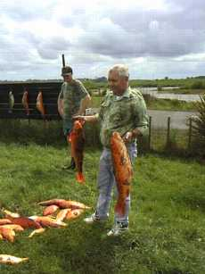
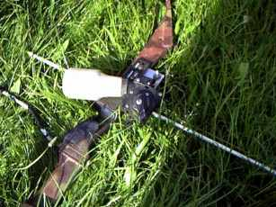
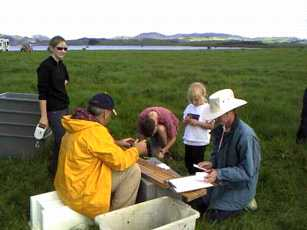
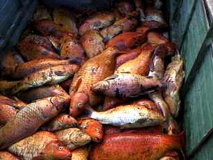

釣行日誌 ＮＺ編
10月28日 コイの狩人
2000/10/28 (SAT)
ハミルトン近郊の湖で開催された、ワイカト地方ボウ・ハンティングクラブ主催のＫＯＩカープ（鯉）・クラシックを見学してきました。これは、洋弓（アーチェリー）に取り付けた特殊なリールと弓矢を用いて、水面近くに集まっている産卵期の鯉を射るという大会です。

ニュージーランドでは、国外から移入された鯉が各地に広まって野生化・増加しており、餌をあさる際に湖底の泥を巻き上げることで水質汚染の原因となっていることから、いわゆる「害魚」とされています。ニュージーランドのコイは、ヨーロッパ原産のものが２０世紀初め頃に持ち込まれたようです。その後、１９８０年代初期からは、日本産の色とりどりの観賞用ニシキゴイが輸入されました。これらの鯉が野生化したものが、現在ではワイカト地方に広く分布しています。
観賞用の錦鯉が野生化したので、90%以上のコイは金魚のような鮮やかな金赤色をしています。（このため狩るときに見つけやすい！） その他、白系のまだら、グレー系がちらほら見られますが、日本で言うところの野鯉が有する黒～暗紺色～黄褐色系の色の個体はほとんどいません。
先日の結果としては、ワイカト川下流域に広がる各湖沼・河川から体長１ｍ、体重10kg近くの大物を筆頭に、およそ120尾の鯉が捕獲（＝射殺）されて集計所に持ち込まれました。土曜日の水揚げは、計３３１尾、総重量９０９kg、平均体重1.75kgという結果でした。日曜日はそれ以上あったと思います。

狩りに使う弓は写真の通り。矢は樹脂製の円形断面のパイプ、ヤジリは合金製の円錐形、そこに金属棒をＶ字型に突き立ててカエシとしています。矢の尾部には丈夫なナイロン製のコードが結ばれており、余分なコードは白いプラスティックボトルに収納されています。矢が打ち出されるときには、ほとんど抵抗なくボトルからコードが出て行きます。コードの収納は、ハンドルで回転される２個のローラー（＝リール）によって行われます。
大会が終わる日曜日の夕方、計量、表彰式の後で、コイはミンチにされてメンバー各位がバケツで持って帰りました。冷凍しておいて、漁網の中に仕掛けて鰻を捕る餌にしたり、海釣りのコマセ、鯛釣りの餌にしたりするそうです。土曜日の獲物は養豚業者さんが飼料にしたそうです。（嗚呼、輪廻転生......）
一人の参加者は、丸のままのコイのいいやつを持って帰りましたので、たぶん食べたのではないかと思います。ハンターのほとんどは白人系かマオリ系の人たちなので、あまりコイを食べる習慣はないのではと思われました。

このイベントにおいては、ニュージーランド政府自然保護局（ＤＯＣ）の依頼を受けたワイカト大学の教授と学生が、鯉の計量、採寸、鱗と胃の内容物の採集に協力し、私もそのうちの一人として参加した次第です。自然保護局では、これらのデータを収集し、鯉の棲息範囲の広がりや、生息数の変動を調べるための基礎資料にしています。
ワイカト地方ボウ・ハンティングクラブでは、春から秋まで、鳥獣以外のターゲットとして、大勢の人たちが鯉を狙っています。釣りの大会は馴染みがあるのですが、「狩猟」として鯉を撃つのを見るのは初めてだったのでいささか驚くと同時に、いかに害魚であるとは言え、「大虐殺！？」という印象を受けました。

まぁこちらの人は、害魚・害獣・害虫などを総称して「ペスト」と呼んで徹底的に駆除しますから、日本人のように「殺生」を禁じる考え方は無いのですが、それにしても驚きでした。「釣り」というものが、えらく穏やかな趣味であるように思えた土曜日でした。もっとも釣られる魚にとっては撃たれようがハリと糸で釣り上げられようが五十歩百歩でしょうが。^_^;
印象深かったのは、優勝商品が、おそらくアメリカ製と思われる「歌うブラックバス」の壁掛け（時計？）だったことです。裏面を操作すると、
～どーんとうぉりぃぃー、びいはっぴぃ～
とバスが身をよじらせながら歌っていました。（笑）バス問題に揺らぐ日本のことを想うと、エライ皮肉な賞品に思えました.......
釣行日誌ＮＺ編 目次へ
サイトマップ
ホームへ
お問い合わせ